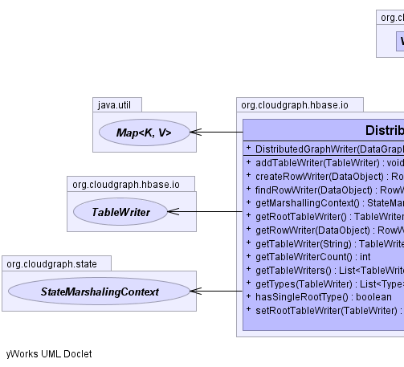
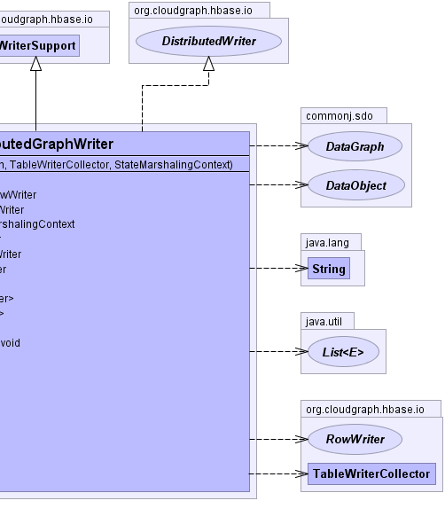

public class DistributedGraphWriter extends WriterSupport implements DistributedWriter
Acts as a container for one or more TableWriter elements
encapsulating a set of component table write operations for federation across
multiple tables, or a single table in the most simple (degenerate) case.
GraphTableWriter,
GraphTable|  |  |
rowWriterMap| Constructor and Description |
|---|
DistributedGraphWriter(DataGraph dataGraph,
TableWriterCollector collector,
StateMarshalingContext marshallingContext) |
| Modifier and Type | Method and Description |
|---|---|
void |
addTableWriter(TableWriter writer)
Adds the given table writer to the container
|
RowWriter |
createRowWriter(DataObject dataObject)
Creates and returns a new row writer associated with the given data object.
|
RowWriter |
findRowWriter(DataObject dataObject)
Returns the row writer associated with the given data object or null if no
row writer is associated.
|
StateMarshalingContext |
getMarshallingContext()
Returns the marshalling context for this operation.
|
TableWriter |
getRootTableWriter()
Returns the table writer associated with the data graph root.
|
RowWriter |
getRowWriter(DataObject dataObject)
Returns the row writer associated with the given data object
|
TableWriter |
getTableWriter(java.lang.String tableName)
Returns the table writer for the given configured table name, or null of
not exists.
|
int |
getTableWriterCount()
Returns the count of table writers for this container.
|
java.util.List<TableWriter> |
getTableWriters()
Returns all table writers for the this container
|
java.util.List<Type> |
getTypes(TableWriter operation)
Returns a list of types associated with the given table operation.
|
boolean |
hasSingleRootType()
Returns true if only one table operation exists with only one associated
(root) type for this operation.
|
void |
setRootTableWriter(TableWriter writer)
Sets the table writer associated with the data graph root.
|
addRowWriter, createRowWriter, createRowWriter, findContainerRowWriter, getContainerAncestry, getContainerRowWriterpublic DistributedGraphWriter(DataGraph dataGraph,
TableWriterCollector collector,
StateMarshalingContext marshallingContext)
throws java.io.IOException
java.io.IOExceptionpublic TableWriter getTableWriter(java.lang.String tableName)
getTableWriter in interface DistributedWritertableName - the name of the configured table.public void addTableWriter(TableWriter writer)
addTableWriter in interface DistributedWriterwriter - the table writer.public int getTableWriterCount()
getTableWriterCount in interface DistributedWriterpublic java.util.List<TableWriter> getTableWriters()
getTableWriters in interface DistributedWriterpublic TableWriter getRootTableWriter()
getRootTableWriter in interface DistributedWriterpublic void setRootTableWriter(TableWriter writer)
setRootTableWriter in interface DistributedWriterwriter - the table writerpublic RowWriter getRowWriter(DataObject dataObject)
getRowWriter in interface DistributedWriterjava.lang.IllegalArgumentException - if the given data object is not associated with any row writer.dataObject - the data objectpublic RowWriter findRowWriter(DataObject dataObject)
findRowWriter in interface DistributedWriterdataObject - the data objectpublic RowWriter createRowWriter(DataObject dataObject) throws java.io.IOException
createRowWriter in interface DistributedWriterjava.io.IOExceptionjava.lang.IllegalArgumentException - if the given data object is already associated with a row writer.dataObject - the data objectpublic boolean hasSingleRootType()
hasSingleRootType in interface DistributedOperationpublic java.util.List<Type> getTypes(TableWriter operation)
getTypes in interface DistributedWriterreader - the table operationpublic StateMarshalingContext getMarshallingContext()
DistributedOperationgetMarshallingContext in interface DistributedOperationCloudGraph® is a registered trademark of TerraMeta Software, Inc. Copyright © 2014 - All Rights Reserved.